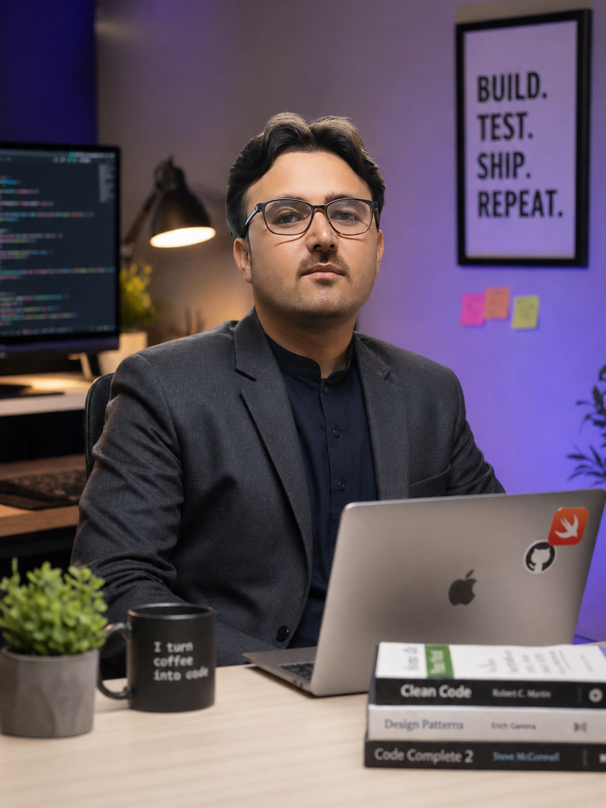

What I Do
I build iOS and tvOS applications using Swift, UIKit, SwiftUI, Combine, Core Data, Core Animation, RESTful APIs, and third-party SDK integrations.
Swift • UIKit • SwiftUI • MVVM • tvOS
I am an iOS Developer with 4+ years of experience building and maintaining production iOS and tvOS applications. I focus on clean Swift code, API integrations, app stability, memory optimization, and smooth user experiences.

Build. Test. Ship. Repeat.
Profile
I build iOS and tvOS applications using Swift, UIKit, SwiftUI, Combine, Core Data, Core Animation, RESTful APIs, and third-party SDK integrations.
I handle features end-to-end, collaborate with backend and product teams, debug production issues, and improve app performance with Xcode tools and Instruments.
Fintech workflows, secure connectivity, AI chat interfaces, Apple TV experiences, memory optimization, and stable App Store/TestFlight releases.
Featured work
VPN-based iOS application focused on secure connectivity, reliable networking, feature development, and stability improvements.
AI chat application with dynamic responses, AI API integration, smooth message handling, and optimized continuous request flow.
Apple TV app for searching and viewing news, videos, and images with media playback and large-screen navigation optimization.
Production fintech app with payments, bill payments, mobile top-ups, wallet management, secure data handling, and API integrations.
Digital wallet features including transactions, account management, real-time financial operations, and responsive UI updates.
Travel iOS app for exploring tourist locations and dynamic travel information with reusable UI components and API-driven content.
Experience
Islamabad, Pakistan
Lahore, Pakistan
Lahore, Pakistan
Toolkit
My stack covers app architecture, networking, concurrency, persistence, UI frameworks, debugging, performance, deployment, and production collaboration.
Recognition
Received from CEO, Xint Solutions, for outstanding performance in 2024.
Recognized for delivering multiple production-level iOS applications in 2022.
Advanced Programming in Swift and Introduction to iOS Mobile Application Development.
The University of Agriculture Peshawar. CGPA 3.71, Grade A.